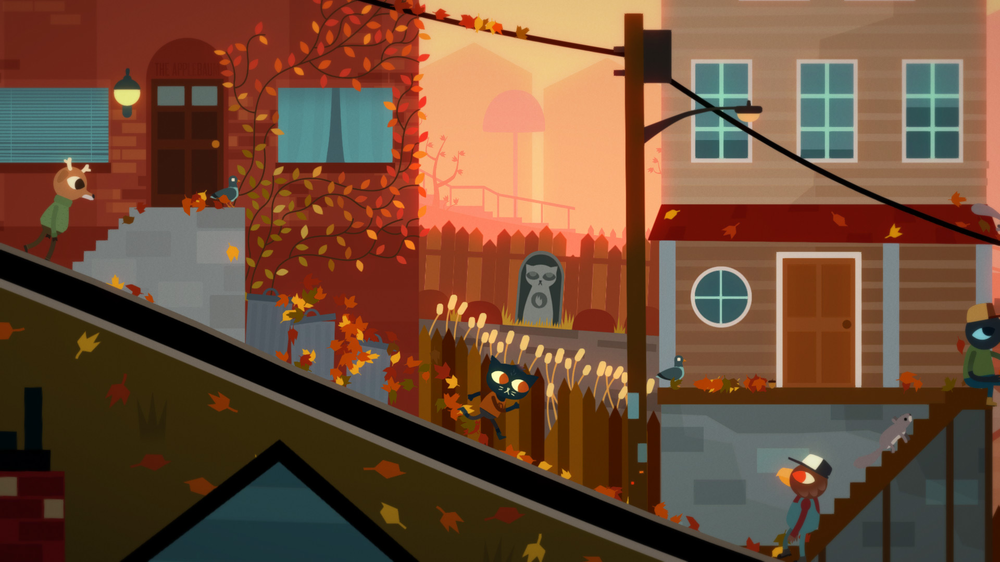
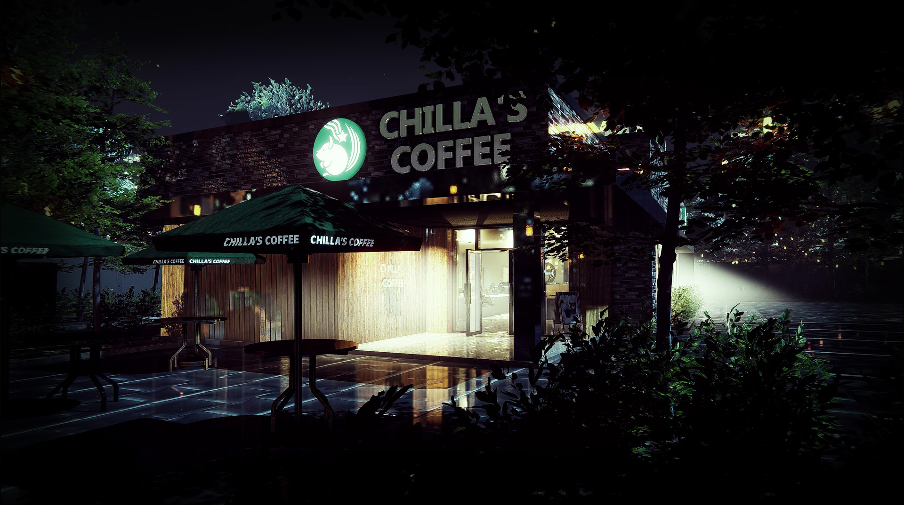

Author: Lindsey Yucha

As fall is upon us, it's the perfect time to cozy up with a video game that captures the essence of fall. Night in the Woods, an indie gem developed by Infinite Fall, immerses the player in the mystery of season. Its charming 2D style complements the fall atmosphere with a warm color palette. Alongside the artstyle, the game's fantastic soundtrack enhances the game's overall experience. Night in the Woods takes place in the town of Possom Springs, following the main character Mae as she returns to her home town after dropping out of college, reconnecting with her parents and friends. Characters in the game are relatable, allowing players' to identify with them and feel more connected to the game. The game's main theme surrounds change, reflection, nostalgia, and self-discovery. As fall is a season for change, with leaves changing colors and falling, I think the season pairs incredibly with the themes of changing within the game. Not to forget, there is a mystery element added to the game's plot, capturing the vibe of Halloween. Overall, Night in the Woods is a must-play video game for the fall season. Its captivating autumn atmosphere, soundtrack, and themes make it an excellent choice to embrace the beauty of the season.
| Category | Night in the Woods |
|---|---|
| Genre | Adventure, Indie, Mystery |
| Platform | PC, PlayStation 4, Xbox One, Nintendo Switch |
| Developer | Infinite Fall |
| Release Date | February 21, 2017 |
| Setting | Small town of Possum Springs |
| Art Style | 2D, Hand-Drawn |
| Gameplay Style | Narrative, Exploration, Adventure |
| Main Protagonist | Mae Borowski |
| Themes | Coming of Age, Nostalgia, Mental Health |
| Main Plot | Mae returns to her hometown and unravels a mysterious disappearance |
| Hours of Gameplay | Approximately 8-10 hours for the main story |
| Critical Acclaim | Positive reviews, praised for its storytelling and characters |
| Awards | Several independent game awards and nominations |
| Soundtrack | Composed by Alec Holowka |
| Impact | Considered a cult classic in the indie game community |
Author: Lindsey Yucha

"Chilla's Art: The Closing Shift" is an indie Japanese horror game that immerses players in a uniquely unsettling experience. Developed by the game studio Chilla's Art, this game blurs the lines between simulation and horror genres. At the start, players assume the role of a barista, tasked with the routine responsibilities of closing shifts at a seemingly ordinary café. Despite the tasks and cafe not being out of the ordinary, you play as a woman who works alone at night, occasionally having to serve suspicious-seeming customers, which creates a realistically unsettling atmosphere. Furthermore, the character design and filter over the game enhance the horror experience, with everything seeming off. As the game unfolds, strange events begin to weave their way into the narrative. Subtle hints and unnerving incidents indicate that something is progressively getting worse. The protagonist finds herself becoming a victim of stalking, all while she attempts to complete her daily duties as a barista. With its blend of psychological horror and simulation gameplay, this indie gem stands out as a must-play for horror fans seeking a unique and spine-tingling experience. The game's ability to create a sense of constant unease and anticipation keeps players on the edge of their seats as they delve deeper into the unsettling atmosphere that unfolds throughout the storyline. "Chilla's Art: The Closing Shift" offers a compelling narrative and a captivating atmosphere that will keep players engaged during their play time, making it a truly remarkable addition to the world of indie horror gaming.